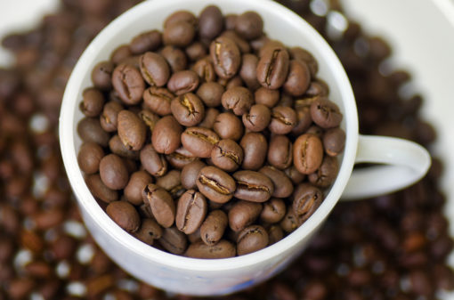

Curiosidades Sobre o Café
O café é uma das bebidas mais consumidas no mundo e faz parte da rotina de milhões de pessoas todos os dias. Além de ser conhecido pelo seu sabor marcante e aroma agradável, o café também possui diversos benefícios para a saúde quando consumido com moderação. Ao longo dos anos, vários estudos científicos mostraram que o café pode contribuir para o bem-estar físico e mental, tornando-se muito mais do que apenas uma bebida para começar o dia.
Um dos principais benefícios do café é o aumento da energia e da disposição. Isso acontece por causa da cafeína, uma substância estimulante natural que age diretamente no sistema nervoso central. A cafeína ajuda a reduzir a sensação de cansaço e melhora o estado de alerta, o que faz com que muitas pessoas utilizem o café para se sentir mais despertas e produtivas durante o trabalho ou os estudos. Outro benefício importante do café é a melhora da concentração e do desempenho mental. A cafeína pode ajudar a aumentar o foco, a atenção e a capacidade de raciocínio. Por esse motivo, muitas pessoas gostam de tomar café antes de estudar, trabalhar ou realizar tarefas que exigem maior nível de concentração. Em pequenas quantidades, o café pode ajudar o cérebro a funcionar de forma mais eficiente. O café também é rico em antioxidantes, substâncias que ajudam a proteger o organismo contra os radicais livres. Esses radicais livres estão associados ao envelhecimento precoce e ao desenvolvimento de algumas doenças. Os antioxidantes presentes no café ajudam a proteger as células do corpo, contribuindo para a saúde geral do organismo. Além disso, alguns estudos indicam que o consumo moderado de café pode estar associado à redução do risco de certas doenças. Pesquisas sugerem que o café pode ajudar a diminuir o risco de doenças como Parkinson, Alzheimer e diabetes tipo 2. Embora o café não seja um medicamento, ele pode fazer parte de um estilo de vida saudável quando consumido de forma equilibrada. Outro ponto interessante é que o café pode ajudar no desempenho físico. A cafeína aumenta os níveis de adrenalina no organismo, o que pode melhorar a performance durante atividades físicas. Por isso, muitas pessoas consomem café antes de praticar exercícios, já que ele pode contribuir para aumentar a energia e a resistência durante o treino. O café também pode ter efeitos positivos no humor. A cafeína estimula a liberação de neurotransmissores como a dopamina e a serotonina, que estão relacionados à sensação de prazer e bem-estar. Isso pode explicar por que muitas pessoas se sentem mais animadas e motivadas depois de tomar uma xícara de café. Além dos benefícios para o corpo e para a mente, o café também possui um grande valor cultural e social. Em muitas culturas, tomar café é um momento de pausa, conversa e convivência. Seja em casa, no trabalho ou em cafeterias, o café muitas vezes reúne pessoas e cria momentos especiais no dia a dia. No entanto, é importante lembrar que o consumo deve ser moderado. O excesso de cafeína pode causar efeitos como ansiedade, insônia ou irritação em algumas pessoas. Por isso, o ideal é consumir café de forma equilibrada, aproveitando seus benefícios sem exageros. Em resumo, o café é uma bebida que combina sabor, tradição e diversos benefícios. Quando consumido com moderação, ele pode ajudar a melhorar a energia, a concentração, o humor e até contribuir para a saúde do organismo. Por esses motivos, o café continua sendo uma das bebidas mais apreciadas no mundo e um verdadeiro companheiro para diferentes momentos do dia. ☕